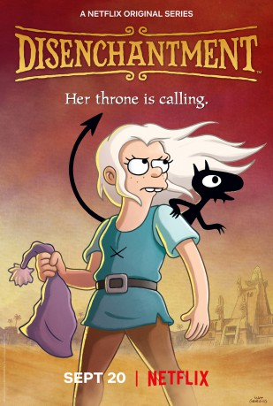

")
 
 IMDB-Wertung: 7.2 / 10
IMDB-Wertung: 7.2 / 10  Tomatometer: 68
Tomatometer: 68  Metascore:
Metascore: 
Die Prinzessinnenpflicht ruft, doch sie betrinkt sich lieber. Beans leichtlebige Eskapaden mit ihrem Dämon und ihrem Elfen treiben den König in den Wahnsinn.
Jahr: 2018
Dauer: 36 Minuten
FSK: 12
Land: USA Studio: NetflixTonspuren: - , - , - , - , - ,
Untertitel: Deutsch, Englisch,
Auflösung: 720p (1280x720) Größe: 1157 MB
Genre: Komödie, Abenteuer, Fantasy, Animation/Trick, TV-Serie
Regisseur: Ira Sherak, Wesley Archer, David D. Au, Albert Calleros, Frank Marino
Drehbuch: Matt Groening, Josh Weinstein, Jamie Angell, Shion Takeuchi, Jeff Rowe
Soundtrack:
Darsteller:
 Nat Faxon als Elfo, 20 episodes, 2018-2019
Nat Faxon als Elfo, 20 episodes, 2018-2019 John DiMaggio als King Zøg, 20 episodes, 2018-2019
John DiMaggio als King Zøg, 20 episodes, 2018-2019 David Herman als The Herald, 20 episodes, 2018-2019
David Herman als The Herald, 20 episodes, 2018-2019 Maurice LaMarche als Odval, 20 episodes, 2018-2019
Maurice LaMarche als Odval, 20 episodes, 2018-2019 Billy West als Sorcerio, 20 episodes, 2018-2019
Billy West als Sorcerio, 20 episodes, 2018-2019 Tress MacNeille als Queen Oona, 19 episodes, 2018-2019
Tress MacNeille als Queen Oona, 19 episodes, 2018-2019 Lauren Tom als Stacy LeBlatt, 5 episodes, 2018-2019
Lauren Tom als Stacy LeBlatt, 5 episodes, 2018-2019 Phil LaMarr als God, 2 episodes, 2019
Phil LaMarr als God, 2 episodes, 2019Datei: X:\HD-Trick-Collections\Disenchantment\Disenchantment S01E01.mkv seit 21.09.2019
Festplatte: Kinder-Filme+Trick
 Alle Filme aus Gruppe 'HD-Trick-Collections\Disenchantment'
Alle Filme aus Gruppe 'HD-Trick-Collections\Disenchantment'